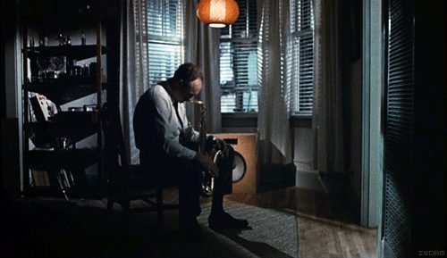

Well it's been an interesting 30 or so days. Among other things I have been attempting to build a mobile app with Apache Cordova, an open source tool for writing HTML/JS/CSS and deploying to most popular mobile operating systems.
At first development looked like they would take a few hours, mostly because I was using native plugins and building using Phonegap build, a free(for open source) build service provided by Adobe. Yep.. Adobe being the good guys, impressive :) I couldn't have been more wrong...
PhoneGap and Cordova are not the same thing, I'm going to talk about Cordova here. The reason being is that Phonegap Build could not be used as it didn't have support for the phonegap-nfc plugin. If I was doing a project that didn't depend on phonegap-nfc development would have been a lot easier and quicker.
So the first takeaway is if you are building a simple app that will use phonegap build supported plugins then use phonegap build, you will have way more fun.
The plugin system is broken, badly. I had some majorly catastrophic few weeks just trying to bring the phonegap-nfc plugin into my project using cordova-cli. I "solved" this by getting someone else to build using cordova-cli 2.7.0. Various things were to blame here but eventually I settled on using Eclipse (an IDE I really dislike) and things got relatively stable to the point where I was able to use a modified BarcodeScanner branch to introduce new plugin functionality.
I want to be clear about how badly broken things are here though.. The plugin spec/documentation is near non existent, in fact only Adobe internal guys have it at the point of me writing this. Thankfully the Adobe guys took a little time out to help me get things working.. Good guy Adobe!
Debugging Cordova is horrible assuming you actually get past the 50 or so barriers to installation most of the errors messages are ambiguous, that's if you get one.. Expect to see a lot of "Error is Null" or "File cannot be found" Exception errors.. To get around these you will basically need to do lots of going forward/backward and iterating in small steps, testing / compiling each time you make a change..
I ended up using Weinre for improving styling and issuing debug commands and I used logcat/eclipse console for compile / JS errors. Weinre has a weird issue where if an error happens it blocks future JS execution so never actually reports the error back to your remote console, pretty insane and creates a fair amount of pain until you are used to it. logcat's filtering functionality is really broken and as my crappy LG phone throws an error every few MS that ends up spamming my logcat which makes spotting application errors pretty difficult.
The Cordova community and guys on IRC were amazing, really pulling me through some really challenging times.
Using eclipse is horrible but it gets less bad once you get used to it. If you are familiar, using git behind your file structure but .gitignoring your bin folders will save you a fair amount of pointless data. In general git will save you a lot of pain though, see what I mentioned above about doing lots of small iterations and testing each one..
Until you have Cordova setup and your plugins working correctly things will be an uphill struggle but once you get everything setup you can quickly use your favorite JS development tools to quickly integrate new modules/functionality and that's really when things start to make a lot of sense with cordova. I actually found myself enjoying the last 2 days of this project (yep ~28 days getting a working Android platform and 2 days actually building the app), I'm not looking forward to doing other platforms though..
Cordova 3 is going to be exciting, the move away from plugins and towards features should ensure plugin developers actively maintain their code meaning that more plugin should install with very little friction. I'm certainly going to be sticking with Cordova and will use it again in future projects. I think July/August time we can see plugin support stabilizing and that's when things should get really interesting :)